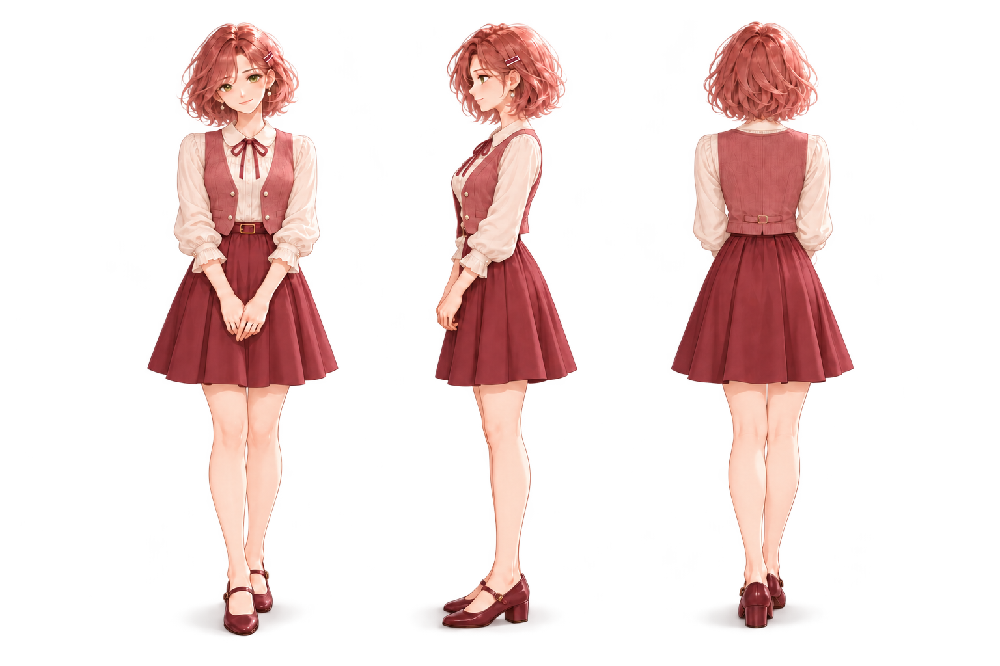
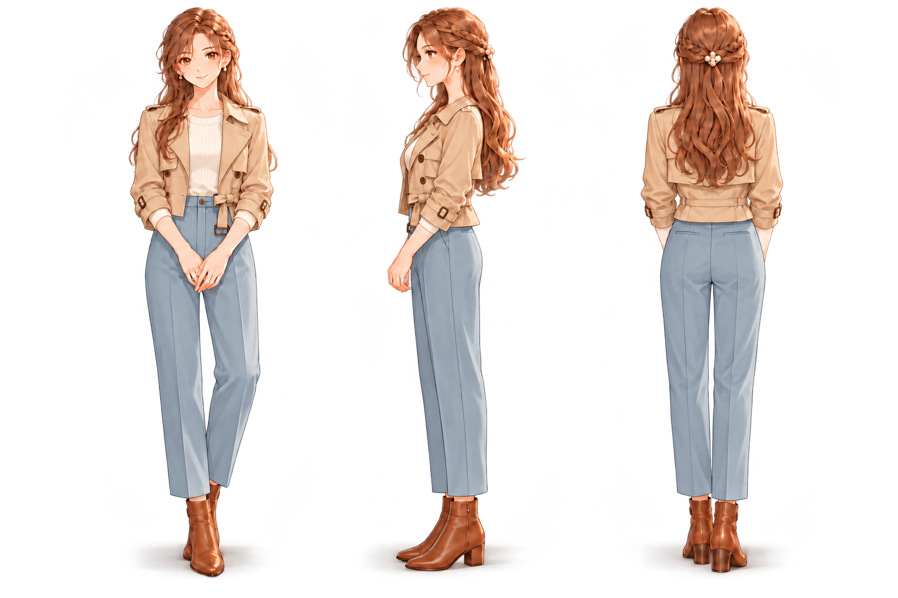
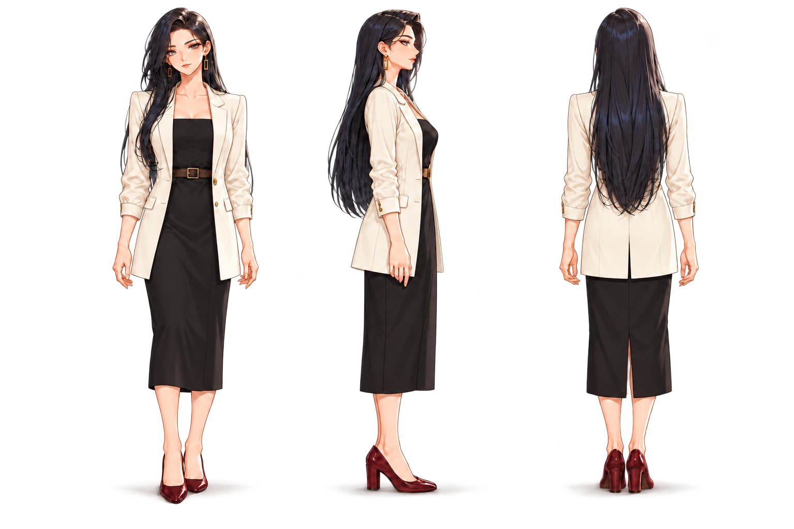
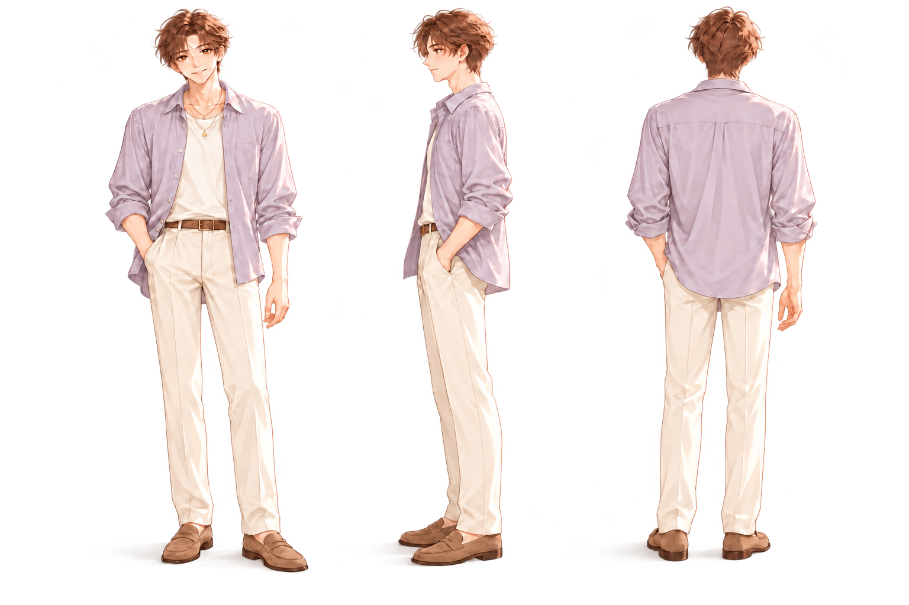
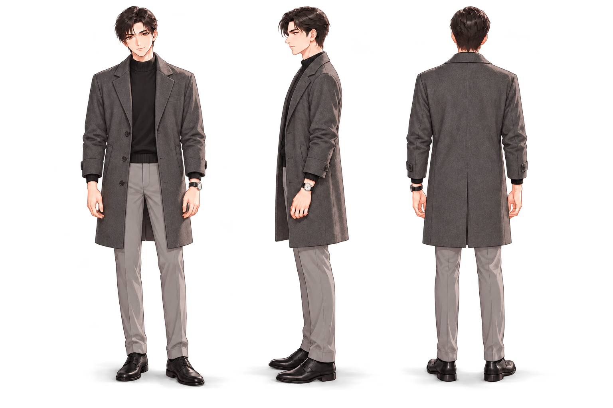
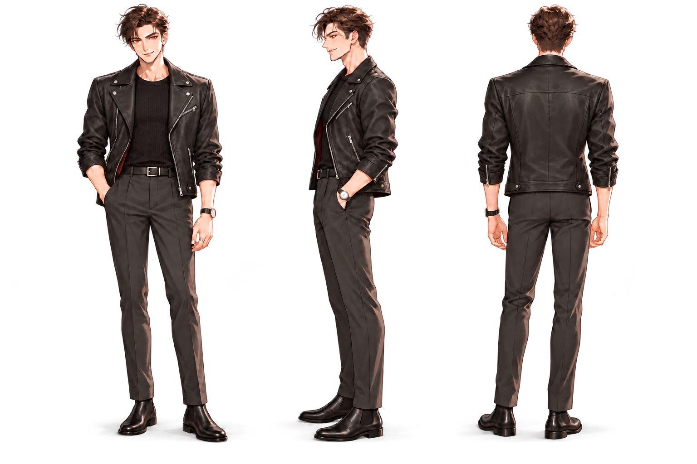

女助理 · 甜美机灵158 cm
甜美、机灵、善于观察，主动体贴；小巧短上装与轻盈A字裙突出甜美灵动，小飘带和珍珠扣体现机灵、细致。
新穿搭：奶油白飘带衬衫＋莓粉短马甲＋深莓A字短裙＋酒红玛丽珍
158cm · 甜美机灵奶油白飘带衬衫莓粉短马甲深莓A字短裙
六位助理，各有自己的性格与日常穿搭。柔和的二维画风、不同的身高与轻柔投影，让每一种陪伴都有自己的模样。每张从左到右为正面、侧面、背面，点击可查看大图。
六位助理的设定身高从158到188厘米。左右滑动查看全部人物。






身高为原创候选的设计设定；发型、鞋跟与姿态会影响视觉高度。
甜美、机灵、善于观察，主动体贴；小巧短上装与轻盈A字裙突出甜美灵动，小飘带和珍珠扣体现机灵、细致。
新穿搭：奶油白飘带衬衫＋莓粉短马甲＋深莓A字短裙＋酒红玛丽珍
温柔、可靠、坚定果断，有行动力；温和浅色搭配利落裤装，兼顾亲和感和行动力。
新穿搭：浅驼短风衣＋象牙白针织＋雾蓝直筒裤＋焦糖短靴
高傲自信、审美鲜明，从容有主见；黑白对比、修长直线条与克制金饰体现自信和主导感，自然窄胯。
新穿搭：象牙白长西装＋黑色方领直筒长裙＋几何金饰＋酒红尖头鞋
艺术气质、灵动健谈、细腻敏感；身形修长轻盈。
克制理性、专业细致，沉稳可靠；低饱和冷灰、整洁高领和严谨剪裁突出克制、专业与可靠。
新穿搭：冷灰长大衣＋炭黑半高领＋浅灰西裤＋黑色德比鞋
自信、不羁、直率果断，带玩味与力量感；短皮衣、黑灰层次与少量银饰强化不羁和力量感，呼应红瞳坏笑。
新穿搭：黑色短皮夹克＋黑色修身针织＋炭灰直筒裤＋黑色切尔西靴